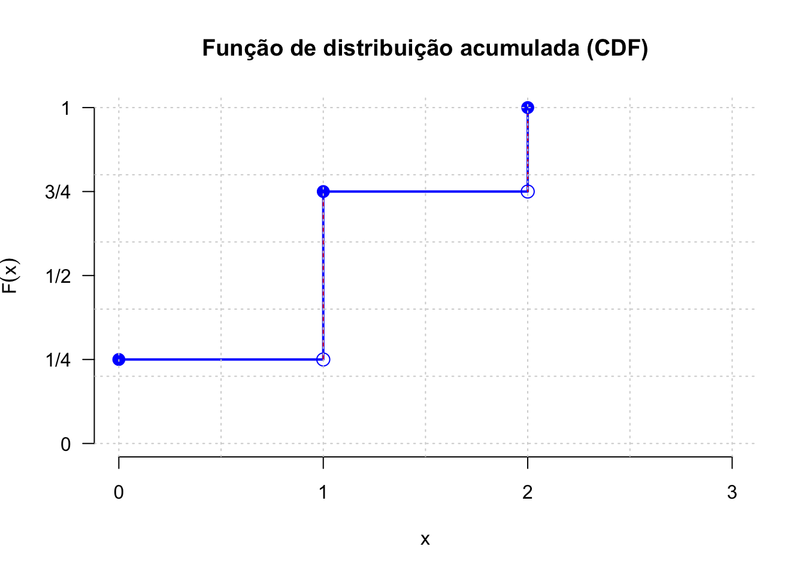

9.2 Intervalos de confiança
Um intervalo de confiança (\(IC\)) pode ser entendido com a faixa de valores delimitada por um mínimo e um máximo, calculados como função direta de um nível de confiança e da variabilidade e inversa da tamanho amostral.
\[ \text{estimativa amostral} \pm confiança.\sqrt\frac{variabilidade}{n} \]
Raramente se dispõe de informação a respeito da variabilidade (\(\sigma^{2}\)) da população estudada. Assim, a variabilidade populacional será frequentemente incorporado na expressão acima, com ligeiras modificações, na forma de sua estimativa amostral (\(S^{2}\)).
De certo modo, um intervalo de confiança reflete uma estimativa objetiva da (im)precisão e do tamanho da amostra de determinada pesquisa e, assim, podemos considerá-lo como uma medida da qualidade da amostra e da pesquisa.
O nível de confiança é designado pela quantidade \((1-\alpha)\) na qual \(\alpha\) é denominado de nível de significância, uma medida da probabilidade de erro.
Dependendo do nível de confiança que escolhemos os limites superior e inferior do intervalo mudam para uma mesma estimativa amostral. Os intervalos de confiança mais utilizados na literatura são os de 90%, 95%, 99% e menos de 99,9%.
O intervalo de confiança de 95% é tradicionalmente o intervalo mais utilizado na literatura e isso está relacionado ao nível de significância estatística (\(P<0,05\)) geralmente mais aceito.
Quanto menor for a amplitude de um intervalo, maior será a precisão da estimativa. Todavia, somente estudos com amostras razoavelmente grandes resultarão em um intervalo de confiança estreito, indicando simultaneamentente com alta precisão e alto grau de confianla a estimativa do parâmetro.
Intervalos de confiança podem ser construídos a quase todas as quantidades estatísticas e suas diferenças (quando se procura estudar se há ou não diferenças entre os parâmetros de duas populaçoes) como, por exemplo:
- médias;
- proporções; e,
- variâncias.
Um intervalo de confiança estabelecido sob certa probabilidade não deve ser interpretado como sendo a faixa de valores, delimitada por um mínimo e máximo, entre os quais o parâmetro da população (o qual se estima ou sobre o qual se infere) se insere.
Mas sim que, extraíndo-se um grande número de amostras de igual tamanho e da mesma população, e construindo-se para cada uma dessas amostras um intervalo de confiança de um mesmo nível de significância (\(\alpha\)), observaremos que uma determinada proporção desses intervalos, chamada de nível de confiança (\(1-\alpha\)) irá, de fato, conter o parâmetro sobre o qual se estima ou sobre o qual se infere. Por conseguinte, uma proporção desses intervalos chamada de nível de significância (\(\alpha\)) não irá conter o verdadeiro valor do parâmetro populacional.
Assim, \((1-\alpha)\) traduz o grau de confiança que se tem que um intervalo de confiança, calculado sobre uma estatística advinda de uma particular amostra de tamanho \(n\) da variável aleatória \(X\), inclua o verdadeiro valor do parâmetro da população:
IC.N = function (N, n, mu, sigma, conf) {
dados=data.frame()
plot(0, 0,
type="n",
xlim=c(mu-0.4*mu,mu+0.4*mu),
ylim=c(0,N),
bty="l",
xlab="Escala de valores da variável",
ylab="Intervalos amostrais construídos",
main=paste0("Intervalos com iguais níveis de confiança fixados em ", 100*conf, "% \n(",N," amostras de tamanho ",n,")") ,
sub=paste0("Parâmetros da distribuição da população Normal ( \u03bc, \u03c3) = (",mu,", ", sigma,")"))
abline(v=mu, col='red', lwd=2, lty=2)
#axis(1, at = c(mu-1*mu, mu, mu+1*mu))
zc = qnorm(1-((1-conf)/2))
#sigma.xbarra = sigma/sqrt(n)
for (i in 1:N) {
x = rnorm(n, mu, sigma)
media = mean(x)
erro= media-mu
sd = sd(x)
li = media - zc * sd/(sqrt(n))
ls = media + zc * sd/(sqrt(n))
temp=cbind(mu, media, erro, li, ls)
dados=rbind(dados, temp)
plotx = c(li,ls)
ploty = c(i,i)
if (li > mu | ls < mu) lines(plotx,ploty, col="red", lwd=2, lend=0)
else lines(plotx,ploty, lend=0)
if (li > mu | ls < mu) points(media, i, col="red", cex=1)+text(y=i+3,x=media, labels=round(media,1), cex=1, col='red')
else points(media, i, col="black", cex=1)
}
colnames(dados)=c("mu", "media", "erro", "li", "ls")
return(dados)
}
N=100
n=64
mu=9.421
sigma=4.1681
conf=0.95
IC.N(N, n, mu, sigma, conf)
## mu media erro li ls
## 1 9.421 9.979 0.55831 8.924 11.034
## 2 9.421 9.195 -0.22612 8.227 10.162
## 3 9.421 9.739 0.31786 8.844 10.633
## 4 9.421 8.940 -0.48087 7.917 9.963
## 5 9.421 8.756 -0.66455 7.591 9.922
## 6 9.421 9.206 -0.21464 8.209 10.203
## 7 9.421 9.910 0.48917 8.868 10.953
## 8 9.421 9.586 0.16482 8.657 10.515
## 9 9.421 9.031 -0.39005 8.053 10.009
## 10 9.421 9.639 0.21767 8.699 10.578
## 11 9.421 9.820 0.39928 8.737 10.904
## 12 9.421 10.009 0.58799 9.032 10.986
## 13 9.421 9.191 -0.23039 8.159 10.222
## 14 9.421 9.563 0.14242 8.530 10.597
## 15 9.421 9.438 0.01690 8.526 10.350
## 16 9.421 8.883 -0.53780 7.986 9.780
## 17 9.421 7.935 -1.48619 6.887 8.983
## 18 9.421 9.451 0.03006 8.312 10.590
## 19 9.421 9.449 0.02825 8.426 10.473
## 20 9.421 9.528 0.10706 8.456 10.600
## 21 9.421 9.171 -0.25029 8.161 10.181
## 22 9.421 10.352 0.93084 9.306 11.398
## 23 9.421 8.797 -0.62438 7.809 9.785
## 24 9.421 9.130 -0.29137 8.020 10.239
## 25 9.421 9.860 0.43949 8.729 10.992
## 26 9.421 8.830 -0.59120 7.736 9.923
## 27 9.421 9.463 0.04156 8.415 10.510
## 28 9.421 10.573 1.15229 9.741 11.405
## 29 9.421 10.185 0.76431 9.112 11.259
## 30 9.421 9.519 0.09790 8.532 10.506
## 31 9.421 9.098 -0.32286 8.020 10.177
## 32 9.421 8.941 -0.48021 7.796 10.086
## 33 9.421 9.554 0.13314 8.570 10.539
## 34 9.421 8.952 -0.46902 7.880 10.024
## 35 9.421 9.116 -0.30533 8.143 10.088
## 36 9.421 9.869 0.44829 8.875 10.864
## 37 9.421 10.452 1.03061 9.326 11.577
## 38 9.421 9.993 0.57216 9.017 10.969
## 39 9.421 8.662 -0.75911 7.655 9.669
## 40 9.421 9.614 0.19259 8.553 10.674
## 41 9.421 8.759 -0.66167 7.818 9.700
## 42 9.421 9.702 0.28088 8.633 10.771
## 43 9.421 9.388 -0.03270 8.458 10.319
## 44 9.421 9.785 0.36401 8.709 10.861
## 45 9.421 10.547 1.12633 9.468 11.626
## 46 9.421 8.738 -0.68296 7.817 9.659
## 47 9.421 9.502 0.08051 8.506 10.497
## 48 9.421 9.440 0.01866 8.294 10.585
## 49 9.421 8.323 -1.09801 7.285 9.361
## 50 9.421 9.684 0.26269 8.629 10.738
## 51 9.421 10.162 0.74076 9.179 11.144
## 52 9.421 9.104 -0.31663 8.020 10.188
## 53 9.421 9.285 -0.13625 8.203 10.367
## 54 9.421 8.740 -0.68094 7.759 9.721
## 55 9.421 9.918 0.49736 8.885 10.951
## 56 9.421 9.143 -0.27835 8.287 9.998
## 57 9.421 9.048 -0.37332 7.877 10.219
## 58 9.421 9.553 0.13157 8.463 10.643
## 59 9.421 9.774 0.35338 8.602 10.947
## 60 9.421 9.527 0.10635 8.557 10.497
## 61 9.421 9.569 0.14808 8.642 10.496
## 62 9.421 9.696 0.27496 8.671 10.721
## 63 9.421 9.646 0.22455 8.415 10.876
## 64 9.421 9.185 -0.23585 8.249 10.121
## 65 9.421 9.079 -0.34209 7.880 10.278
## 66 9.421 9.280 -0.14126 8.150 10.410
## 67 9.421 9.925 0.50429 8.877 10.974
## 68 9.421 8.713 -0.70773 7.696 9.730
## 69 9.421 9.694 0.27350 8.716 10.673
## 70 9.421 8.456 -0.96494 7.641 9.271
## 71 9.421 9.364 -0.05702 8.354 10.374
## 72 9.421 9.667 0.24636 8.513 10.822
## 73 9.421 10.197 0.77634 9.152 11.243
## 74 9.421 9.774 0.35265 8.736 10.812
## 75 9.421 8.766 -0.65497 7.709 9.823
## 76 9.421 8.941 -0.47981 7.847 10.036
## 77 9.421 9.078 -0.34283 8.007 10.149
## 78 9.421 8.792 -0.62942 7.655 9.928
## 79 9.421 8.796 -0.62543 7.630 9.961
## 80 9.421 9.721 0.29993 8.668 10.774
## 81 9.421 9.628 0.20693 8.564 10.692
## 82 9.421 10.004 0.58294 8.904 11.104
## 83 9.421 10.190 0.76850 9.129 11.250
## 84 9.421 8.923 -0.49754 7.998 9.849
## 85 9.421 9.397 -0.02368 8.412 10.382
## 86 9.421 10.242 0.82116 9.217 11.267
## 87 9.421 10.860 1.43865 9.861 11.858
## 88 9.421 9.285 -0.13592 8.314 10.256
## 89 9.421 8.325 -1.09611 7.393 9.257
## 90 9.421 8.492 -0.92892 7.324 9.660
## 91 9.421 10.249 0.82753 9.310 11.187
## 92 9.421 9.378 -0.04322 8.374 10.381
## 93 9.421 9.670 0.24891 8.741 10.599
## 94 9.421 9.529 0.10773 8.496 10.562
## 95 9.421 9.519 0.09808 8.399 10.639
## 96 9.421 9.116 -0.30499 8.014 10.218
## 97 9.421 9.630 0.20908 8.717 10.543
## 98 9.421 9.752 0.33124 8.814 10.690
## 99 9.421 8.455 -0.96579 7.558 9.353
## 100 9.421 10.279 0.85763 9.323 11.234
O gráfico acima expõe os intervalos de confiança: \((1-\alpha)\)=95% produzidos para as 100 médias de amostras de tamanho 64 extraídas de uma população com parâmetros \(\mu:\) 9.421 e \(\sigma:\) 4.1681.
A proporção de intervalos amostrais que não contém o verdadeiro valor do parâmetro populacional pode ser visualmente inspecionada pelas linhas em vermelho.
Intervalos de confiança bilaterais: intervalos delimitados por dois valores: mínimo e máximo, para a proporção amostral, dentro do qual todos os valores possuem um mesmo nível de confiança de ocorrência.
Intervalos de confiança unilaterais: intervalos delimitados apenas em um de seus lados, nos quais todos os valores possuem um mesmo nível de confiança. Podem ser limitados à direita por um valor máximo ou limitados à esquerda por um valor mínimo.